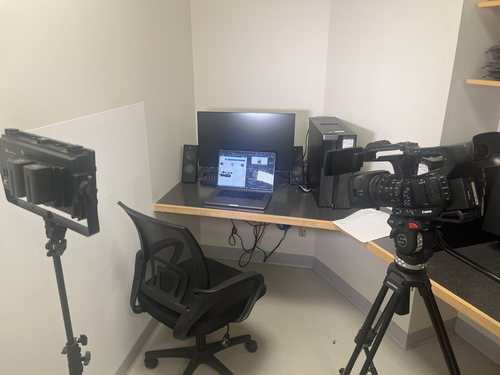

Writing and Editing

This lesson dives into the creative and technical process of writing and editing a news package, emphasizing that while there’s no single “correct” way to do it, there are proven strategies to make the process smoother and more effective. Using the analogy of assembling a puzzle without a reference image, the video highlights the importance of organizing your story elements—interviews, b-roll, natural sound, and standups—and shaping them into a clear, engaging narrative.
At its core, the lesson stresses that every story should answer the essential questions—who, what, where, when, why, and how—while also addressing the most important one: “why should the audience care?” From there, it walks through how to structure a story, build a natural flow, and write in a concise, conversational broadcast style that connects ideas and guides viewers through the narrative.
On the audio side, the lesson provides practical advice for recording high-quality voiceovers and delivering them with intention, emphasizing pacing, tone, and word emphasis to enhance meaning and impact. It also introduces techniques for timing your script, refining your writing, and ensuring your package fits within standard broadcast lengths.
The editing portion reinforces foundational techniques like sequencing shots, avoiding jump cuts, balancing audio levels, and using b-roll and cutaways effectively. It also encourages attention to detail—checking for technical errors, maintaining proper clip length, and ensuring smooth transitions—while leaving room for creativity through graphics and visual storytelling.
By the end of the lesson, viewers will understand how to transform raw footage into a polished, cohesive news package—one that is not only technically sound, but also engaging, purposeful, and meaningful to its audience.